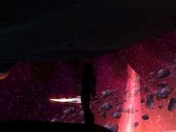

Mégilenithil
Age : 25
Sexe : Femme
Race : Elfe
Faction : Alliance
Formation : Chasseur
Description : Mégilenithil.C'est mon prénom.En commun cela donne:Epée de lune.Pour une chasseresse je sais pas si ça serait le bon prénom.
M'enfin...
Fleche-sang est mon nom. Ah cela me convient mieux. Remarque qui s'en souci.
Je n'ai pas d'ami d'enfance,Pas de parents.Orpheline depuis mes 5 ans.
De 5 ans passer a 10 ans sans en avoir les souvenirs ou trés peu.Je n'ai pas grand chose a retenir de ses années la.
Mais surtout la 5eme année de mon existence est l'année ou mon propre sang fut souillé.
Personne ne m'as sauvé...J'ai survaicut pourtant.Pourquoi je l'ignore.Surrement pas grace a Elune,notre grande Déesse si vénéré.
J'ai aujourd'hui 25 ans.
Mon sang n'est plus le meme.Ma vie non plus.
Je rejoind alors les ombres.Car elles seules sont venue m'aider.
Car elle me ressemble.Si sombre,Si noire.Comme mon sang.
Je me join a ma seule amie, Nectylia. Pour ses roses,rouges,blanches et noires.
Peut etre que la lumière est partit pour moi.Mais elle a oublié de me tuer.Seule les ombres m'ont fait vivres.La vengeance et l'amour m'attendent......Mais chut.Je ne suis pas censer le savoir.....
Plus d'infos sur Mégilenithil >>>Lire les 5 récits de Mégilenithil >>>